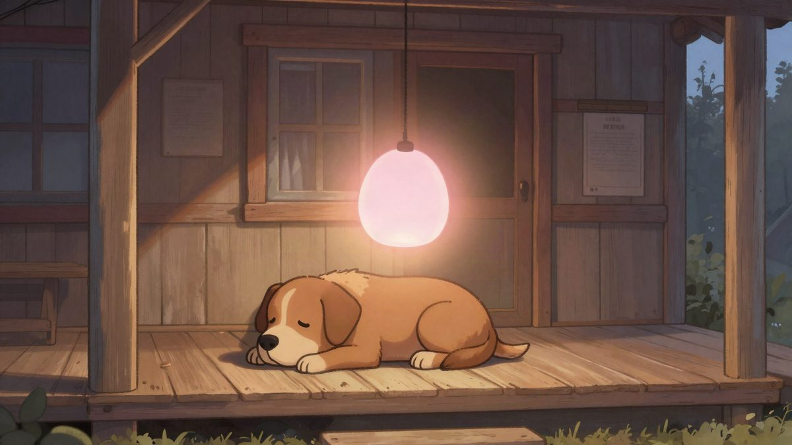

Tokoronyori je najavio igru renal spring: Focus as a Kidney za Steam početkom 2027.

Japanski indie developer Tokoronyori, autor igara Bokura i Bokura: Planet, najavio je igru renal spring: Focus as a Kidney. Igrač je bubreg psa, a vrijeme koje provede radeći na vlastitim zadacima pretvara se u rad bubrega i pomaže psu da povrati energiju. Igra na Steam stiže početkom 2027.
Japanski indie developer Tokoronyori najavio je renal spring: Focus as a Kidney, novu PC igru koja bi na Steam trebala stići početkom 2027. Igra je zamišljena kao productivity naslov. Igrač je doslovno bubreg psa i dok radi vlastite zadatke, održava zdravlje životinje.
U središtu igre je prikaz svakodnevice starijeg muškarca i njegova psa u stvarnom vremenu. Prema opisu, muškarac ustaje u 5 ujutro, kuha kavu, brine se o stoci, pravi sir i cijepa drva, a spava oko 22 sata. Pas je uz njega cijeli dan, šeće i spava, a igrač svojim radom pomaže bubregu da filtrira toksine iz psećeg tijela.
Za praćenje rada postoje countdown timer, Pomodoro timer s ugrađenim pauzama i stopwatch. Vrijeme koje igrač provede radeći pretvara se u aktivnost bubrega i pomaže psu da povrati energiju. Radno vrijeme može se prilagoditi, a ritam igre uskladiti s vlastitim rasporedom, pa se rutina muškarca i psa može pratiti i kad igrač radi noću.
Među dodatnim funkcijama su Right Now To-Do List s do 10 zadataka, Daily Notes koje skupljaju dovršene zadatke i druge informacije te Journaling za slobodnije bilješke. Igra nudi i izbor glazbenih kaseta, gašenje glazbe, ambijentalne zvukove te otključavanje starih fotografija muškarca iz razdoblja od 1950. do 2020. Veličina prozora može se mijenjati, pa igra može ostati otvorena u kutu ekrana dok se radi u drugim programima.
Tokoronyori je najpoznatiji po puzzle igrama Bokura i Bokura: Planet. Autor kaže da renal spring prikazuje život muškarca i psa prije događaja iz ranije igre renal summer, u razdoblju kad su vjerovali da će njihova svakodnevica trajati zauvijek. Prema opisu, u ovoj igri neće umrijeti ni pas ni muškarac.
Izvor: Automaton